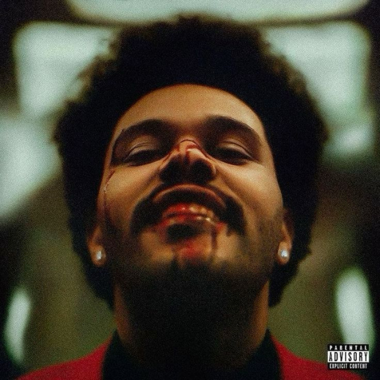
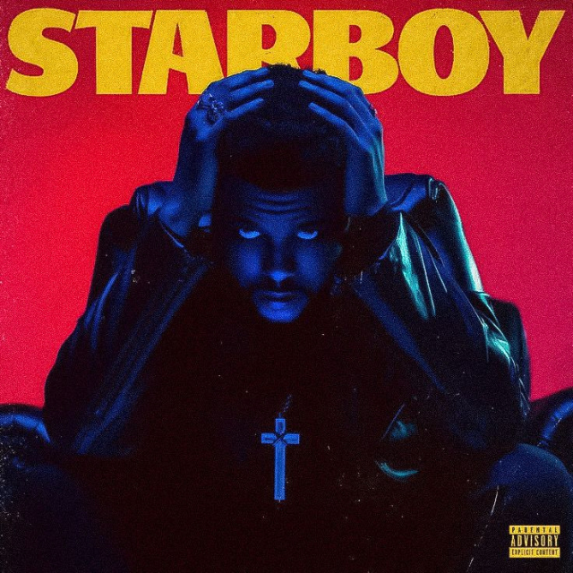

The Weeknd
Abel Makkonen Tesfaye, más conocido por su nombre artistico como The Weeknd, es un artista, compositor,
productor discográfico y actor canadiense. En sus álbumes experimenta con la versatilidad sónica y el lirismo
oscuro,
componiendo temas desde R&B Soul, Pop fusion hasta Synthwave, Synth pop y Electrónica. Otra particularidad de
este artista,
es que sus canciones tienen un toque de experiencia personal: romance, escapismo y soledad. Su compañia
discográfica fue fundada en 2012 con las siglas XO, representando a su equipo de trabajo, amigos y socios.

